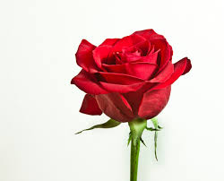
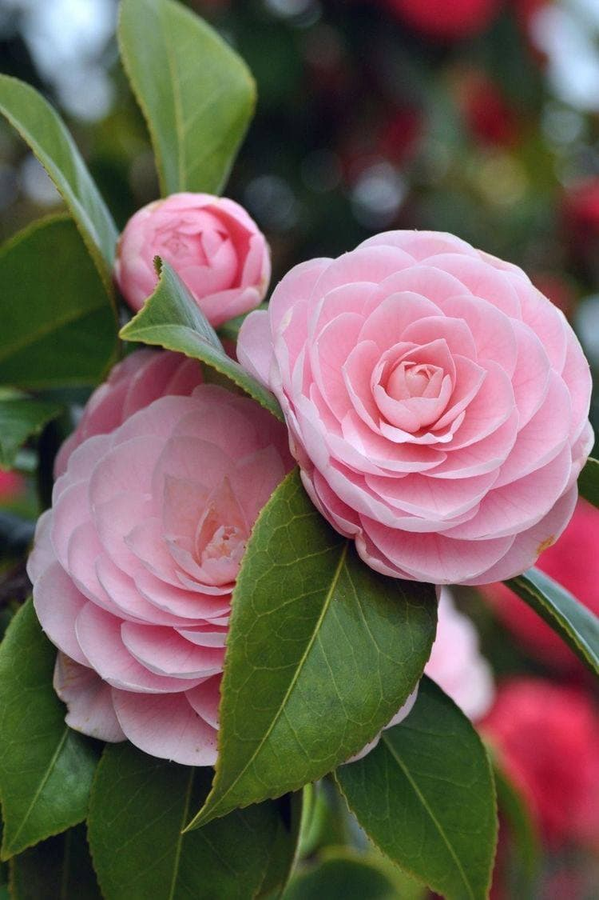
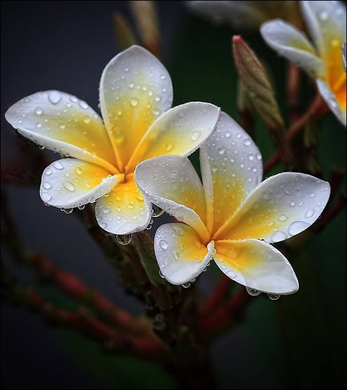

Header
Rose
Roses are best known as ornamental plants grown for their flowers in the garden and sometimes indoors. They have been also used for commercial perfumery.The majority of ornamental roses are hybrids that were bred for their.
Rose2
The name rose comes from Latin rosa, which was perhaps borrowed from Oscan, from Greek ρόδον rhódon (Aeolic βρόδον wródon), itself borrowed from Old Persian wrd- (wurdi), related to Avestan varəδa, Sogdian ward, Parthian wâr
Sun flower
The flower head is actually an inflorescence made of hundreds or thousands of tiny flowers called florets. The central florets look like the centre of a normal flower, apseudanthium. The benefit to the plant is that it is .
Dahlias

Grow dahlias for gorgeous, colorful flowers that bloom from midsummer through autumn, when many plants are past their best! The tubers are planted in the ground in late spring. In colder zones, you do need to dig up and stor